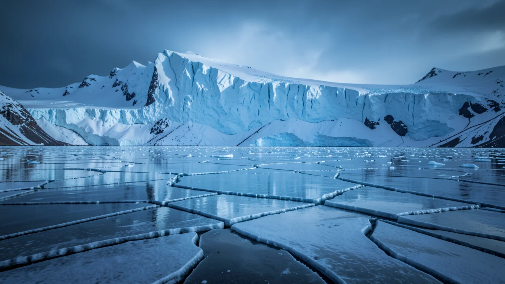
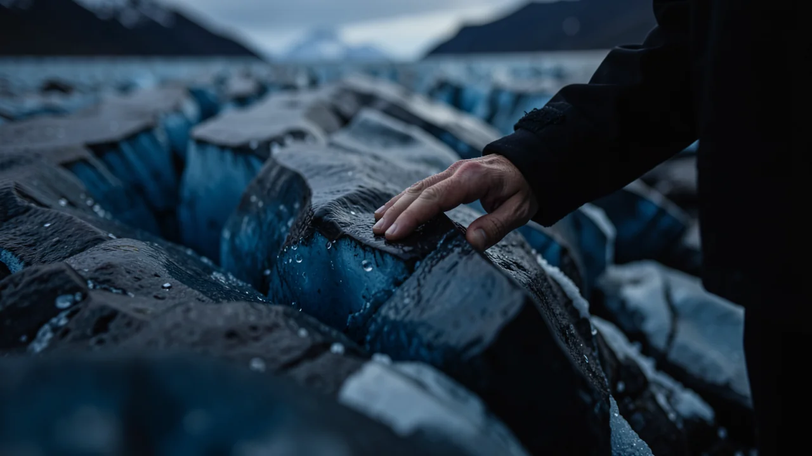

The Last Ice Age Was Not Just a Bad Vacation
AI-generated: the text, images and other media on this page were created with artificial intelligence and may contain errors.
Forget the wool sweaters and heavy boots; understanding the planet's deep freezes is actually the key to surviving our current heatwave.

The Big Freeze
About twenty thousand years ago, at the peak of the last ice age, the Earth was in full 'refrigerator mode.' We are talking about a period where massive sheets of ice swallowed entire continents, leaving landscapes that looked less like a cozy winter wonderland and more like a high-budget horror movie set. If you think your morning commute is bad because of a light dusting of snow, imagine a world where the very geography of your life was being crushed under kilometers of frozen water.

This wasn't just a phase, like that brief period when everyone thought low-rise jeans were a good idea. The Last Glacial Period was a massive, structural shift in how our planet breathes, moves, and stays habitable. It was a time of extreme volatility, where the margins for survival were thinner than the WiFi signal in a basement.
The Core Mechanism: Why Earth Goes Cold
So, how does a planet just decide to freeze over? It isn't because someone forgot to turn the thermostat down. It involves a complex, often terrifying dance of orbital wobbles, atmospheric CO2 levels, and the way sunlight hits the poles. Scientists look at these cycles to understand long-term climate patterns, trying to figure out if we are witnessing a natural hiccup or a permanent breakdown.
Think of the Earth like a spinning top that's slightly off-balance. Over cycles lasting tens of thousands of years, the tilt of the axis and the shape of Earth's orbit shift just enough to change how much solar energy hits the northern hemisphere. When that happens, the ice starts to creep. It’s a slow-motion avalanche that takes centuries to build but can fundamentally rewrite the map of the world.
The last glacial period wasn't just cold; it fundamentally restructured the Earth's entire ecosystem and geography.
Data vs. The Human Story
Here is the problem: you can stare at a spreadsheet of carbon parts-per-million until your eyes bleed, but numbers are terrible at conveying dread. You can show a graph of retreating glaciers, but that graph doesn't capture the feeling of standing on the edge of the Vatnajökull glacier in Iceland, watching a piece of history turn into a puddle.

This is where storytelling comes in. We need more than just climate science datasets to understand what is happening; we need the narrative of loss and change. When we talk about the ice age, we aren't just talking about dead mammoths; we are talking about the ancestors of the very people walking those frozen plains. Data tells us the temperature dropped, but stories tell us how life adapted, struggled, and survived.
It is much harder to ignore a story about a family tracing their lineage through a melting landscape than it is to ignore a bar chart in a scientific journal. The latter is easy to swipe away; the former sticks in your brain like a catchy, slightly depressing song.
Why This Actually Matters (No, Really)
I know, I know. 'It happened thousands of years ago, why should I care?' Because the same mechanics that drove the ice ages are currently being hijacked by human activity. We are essentially playing with the planet's thermostat using a broken remote control. We are experiencing rapid climatic shifts that move much faster than the natural cycles of the past.
Human-driven changes are forcing climate shifts at a pace that far outstrips natural glacial cycles.
If we can learn to interpret the 'story' of the Earth-the way the ice moves, the way the sea levels respond, the way ecosystems collapse-we might actually stand a chance at writing a better ending for our own chapter. The ice age teaches us that the Earth is capable of massive, unyielding change. The question is, can we learn to read the warning signs before the 'refrigerator mode' becomes our permanent reality?
Next time you see a news report about a melting glacier, don't just look at the percentage of mass loss. Ask yourself: what story is the Earth trying to tell us about where we're headed?
Sources
You might also like